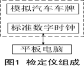
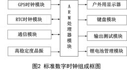
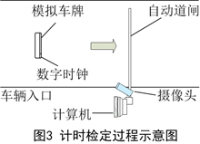

发表在中国计量2019.5
视频触发车牌识别停车计时收费系统的计时检定方法
海 涛 郑州市先达电子技术有限公司
曾继光 广东省佛山市顺德区质量技术监督检测所
李晓东 山西省计量科学研究院
一、视频触发车牌识别系统的计时原理
视频触发方式也称智能视频侦测方式，摄像机不断对停车场出入口视频信息进行实时识别检测，一旦在分析过程中发现运动的物体，便进行视频跟踪，当视频检测到该物体进入到设定的最佳的拍照范围时(虚拟地感线圈范围)，便触发抓拍，然后进行车牌自动识别及后续处理。
在车辆入口，车牌拍照识别形成一个包含车牌及入场时刻t1等信息的记录，同时保留了车牌识别到的那张车辆的图片。
在车辆出口，车牌拍照识别形成一个包含车牌及出场时刻t2等信息的记录，同时保留了车牌识别到的那张车辆的图片。
停车时长等于t2-t1，据此进行收费。
由于停车计时收费装置采用的是视频流触发，一般的计时类检定仪无法与它同步启动计时和同步停止计时。而笔者下面所设计的这个检定仪可实现与此停车计时系统同步计时，从而达到检定该计时系统的目的。
二、计时检定方法和检定仪设计
1.计时检定方法
计时检定的方法是标准数字时钟和车牌共域法，即标准数字时钟和车牌在同一区域，可被同时拍照。这是笔者首次提出的、具有创新性的方法。
当车牌识别系统在车辆在入口处和出口处拍照到车牌时，也同时拍到了数字时钟上的标准时刻值。通过二者时刻的比对，就可对停车场的计时系统进行计时误差检定，也可对多出入口的时刻同步误差进行检定。
2.检定仪的组成与各部分功能
根据这个方法所研制的视频触发车牌识别停车计时系统检定仪，包括标准数字时钟、模拟汽车车牌和平板电脑，如图1所示。

标准数字时钟用来显示当前标准时刻，模拟车牌可代表某辆汽车。平板用来记录和管理检定数据,并可与数字时钟进行交互。
标准数字时钟如图2，包含：GPS时钟模块、RTC时钟模块、通信模块、高稳定度晶振、ARM处理器模块、键盘模块、户外用显示器和输出测试模块。
GPS时钟模块，通过卫星定位获得准确的当前时刻，并可自动对RTC时钟进行校正。RTC时钟模块，属于硬件实时时钟，经初始化后可产生当前时刻数据，可独立运行，适合于GPS信号弱的场所。

通信模块用以和便携式电脑通信。户外用显示器,用以将当前时刻显示在它上面。高稳定度晶振，用以给ARM处理器提供工作节拍和准确的计时。输出测试模块，用以输出测试本机的信号。
3.户外显示器设计难点
检定仪设计的技术难点之一是户外显示器的设计。显示器上显示的时刻值是要不断更新的，且要在户外应用，必须考虑下面几个问题。
（1）拍照的快门时间在(1/1)s～(1/4000) s，没有经过专门设计的显示器，虽人眼可见（有0.1s视觉暂留现象），但拍照出来的照片中会有字段不全现象，如银行的LED户外显示屏。
（2）阳光下必须可见。一般显示器（比如手机）室内可见，但到阳光下对比度大大下降，已不太容易看出显示信息，更拍不清楚了。
（3）采用锂电池供电，检定仪和显示器必须是一种低功耗，适合在户外使用。
（4）显示的字符必须足够大，以便摄像机能够拍到且能分辨出当前时刻值。
笔者采用了大字符LCD显示器，并经过精确的驱动，所设计的检定仪在多处停车场实验和在外地应用，效果非常好，在入口和出口所拍照识别的照片中，检定仪显示器上显示的时刻瞬时值都非常清晰可辨。
4.主要技术指标
采用GPS授时模块，可获得准确的当前时刻,时刻最大误差不超过1ms。
RTC电子时钟每日经GPS校准一次后，每日时刻误差不超过0.45s。
上述技术指标完全符合国家JJG 1010-2013《电子停车计时收费表检定规程》中相关技术要求。
三、计时检定过程
如图3所示,在入口，将检定仪放置于计时系统拍照区域后，系统拍照到模拟车牌的同时，也拍到了数字时钟上的标准时刻值。对于拍照识别这个事件1，车牌识别计时系统的记下的时刻是t1，而数字时钟的时刻值是T1。

经历一段时间后，当车牌识别系统在车辆出口拍照到这个车牌时，也同时拍到了数字时钟上的标准时刻值，对出口拍照识别这个事件2，车牌识别计时系统的时刻是t2，而数字时钟的时刻值是T2。
车牌识别系统的计时时长是Δt（Δt=t2-t1）,而检定仪的标准计时时长是ΔT（ΔT=T2-T1）。因而我们可以得到车牌识别停车计时系统的计时误差为:Δt-ΔT。
可以更换不同模拟车牌，多次进场，多次出场，达到检定多个时间段的目的。
可见，采用新的检定仪，就可对视频触发车牌识别停车计时系统进行计时检定，同时也可对该收费系统的当前时刻和日差进行检定。
四、结束语
针对视频触发车牌识别停车计时系统的计时特点，笔者首次提出了标准数字时钟和车牌共域的检定方法, 解决了检定仪和被检设备同步计时的技术难题。开发了低功耗的户外显示器，解决了可完整无断笔画拍照的技术难题。所设计的标准数字时钟由GPS时钟和RTC时钟相配合，既准确又具备实用性。
模拟车牌和数字时钟的巧妙结合组成了检定仪，借助这种XDJ-5H视频触发车牌识别停车计时收费系统检定仪，笔者已对视频触发车牌识别电子停车计时收费系统进行了计时误差检定。结果表明这种检定方法准确可靠，简单快捷，适合现场检定，更换不同车牌也可以同时对多个时间段进行检定，检定效率高，目前已正在多个计量部门应用。